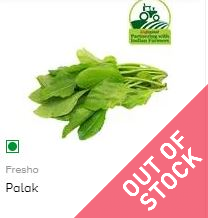
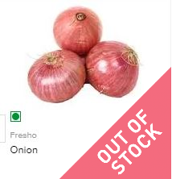
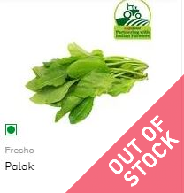
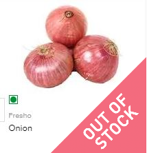
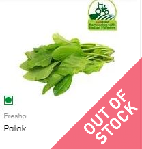
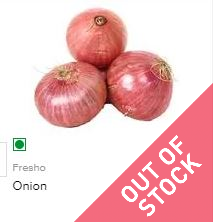

Did you ever imagine that the freshest of fruits and vegetables, top quality pulses and food grains, dairy products and hundreds of branded items could be handpicked and delivered to your home, all at the click of a button? India’s first comprehensive online megastore, FreshfromFarm, brings a whopping 20000+ products with more than 1000 brands, to over 4 million happy customers. From household cleaning products to beauty and makeup, FreshfromFarm has everything you need for your daily needs. FreshfromFarm is convenience personified We’ve taken away all the stress associated with shopping for daily essentials, and you can now order all your household products and even buy groceries online without travelling long distances or standing in serpentine queues. Add to this the convenience of finding all your requirements at one single source, along with great savings, and you will realize that FreshfromFarm- India’s largest online supermarket, has revolutionized the way India shops for groceries. Online grocery shopping has never been easier. Need things fresh? Whether it’s fruits and vegetables or dairy and meat, we have this covered as well! Get fresh eggs, meat, fish and more online at your convenience. Hassle-free Home Delivery options We deliver to 25 cities across India and maintain excellent delivery times, ensuring that all your products from groceries to snacks branded foods reach you in time.
| For any query: | |
|---|---|
| Contact: | 100010000 |
| Address: | Bhatipada,Bhandup-West,Mumbai-400078 |